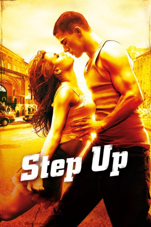

#1387 Step Up 1
 gesehen am 10.07.2015
gesehen am 10.07.2015
 
 IMDB-Wertung: 6.5 / 10
IMDB-Wertung: 6.5 / 10  Metascore: 48
Metascore: 48 
Tyler Gage, ein junger Draufgänger aus Baltimores übleren Gegenden wird nach einem Zusammenstoß mit dem Gesetz zu 200 Stunden Sozialarbeit verurteilt. Diese muss er ausgerechnet an der renommierten Ballett-Schule auf der anderen Seite der Stadt abarbeiten. Zuerst will er mit den Studenten nichts zu tun haben, doch dann trifft er die faszinierende Nora, den Star der Schule. Als Nora für ihre nächste wichtige Aufführung verzweifelt nach einem neuen Tanzpartner sucht, findet sie ausgerechnet in Tyler einen adäquaten Ersatz. Und trotz ihrer unterschiedlichen Herkunft kommen sich Tyler und Nora mit jedem Tanzschritt, jeder Drehung, jedem Takt der Musik ein bisschen näher. Bald wird Tyler nicht nur Nora, sondern auch sich selbst beweisen müssen, dass mehr in ihm steckt, als er sich jemals hat träumen lassen.
Jahr: 2006
Dauer: 104 Minuten
FSK: 6
Land: USA Studio: Buena Vista PicturesTonspuren: DTS - ,
Untertitel:
Auflösung: 1080p (1920x816) Größe: 5058 MB
Genre: Krimi, Drama, Musik, Liebe
Regisseur: Anne Fletcher
Drehbuch: Duane Adler, Melissa Rosenberg, Duane Adler
Soundtrack: Aaron Zigman
Darsteller:
 Channing Tatum als Tyler Gage
Channing Tatum als Tyler Gage- Jenna Dewan Tatum als Nora Clark
- Damaine Radcliff als Mac Carter
- De'Shawn Washington als Skinny Carter
- Mario als Miles Darby
- Drew Sidora als Lucy Avila
 Rachel Griffiths als Director Gordon
Rachel Griffiths als Director Gordon- Josh Henderson als Brett Dolan
- Tim Lacatena als Andrew
 Alyson Stoner als Camille
Alyson Stoner als Camille- Heavy D als Omar
 Deirdre Lovejoy als Nora's Mom / Katherine Clark
Deirdre Lovejoy als Nora's Mom / Katherine Clark- Ryan Sands als History Teacher
 Frank Ferrara als Security Guard
Frank Ferrara als Security Guard Anne Fletcher als Ms. Stephanie
Anne Fletcher als Ms. Stephanie- John Leslie Wolfe als Scout #2
- Sheila Cutchlow als Scout #1
 Tony Devon als Defense Attorney
Tony Devon als Defense Attorney- Robyn Norris als Girl Singer #2 / Lucy Back Up Singer #2
- Caitlin Kinney als Ballerina / Dance Class Dancer
- Emily Bicks als Dance Class Dancer
- Caitlin Gold als Dance Class Dancer
- Samantha Zweben als Nora's 'Finale' Dancer
- Shawn Michelle Cosby als Nightclub Dancer
- Sarah Satow als Nightclub Dancer
 Jamal Sims als Nightclub Dancer
Jamal Sims als Nightclub Dancer Adam Shankman als Nightclub Dancer
Adam Shankman als Nightclub Dancer Zachary Woodlee als Nightclub Dancer
Zachary Woodlee als Nightclub Dancer- Reina Poindexter als Omar Party Girl #2
- Ted Borodaeff als Dancer , uncredited
- Matthew Bowerman als Audition Dancer , uncredited
- Jeremy Bustin als Dance Student , uncredited
- Eddy Challita als Club Patron Dancing , uncredited
- Bruce Allen Dawson als Funeral Mourner , uncredited
 Pamela Fischer als Receptionist , uncredited
Pamela Fischer als Receptionist , uncredited- Stephanie Ray Glass als Ballet Dancer , uncredited
- Franklin Grace als Dancer End Credits , uncredited
- Jamie Marie Hannigan als Dancer , uncredited
- Matt Hartman als Teacher , uncredited
- Melvin Jackson Jr. als PJ's Boy , uncredited
- Nicole Catrice Keller als MSA Student / Ballet Dancer , uncredited
- Jonathan Langley als Dancer , uncredited
- Tia Latrell als Dancer , uncredited
- Sandra Lynn O'Brien als Parent , uncredited
- Chris O'Brocki als Music Student , uncredited
 Emily Peachey als Student , uncredited
Emily Peachey als Student , uncredited- Jennifer Rouse als Nightclub Dancer , uncredited
- Natasha Sattler als Concert Usher , uncredited
- JB Tadena als MSA Student , uncredited
 Towanda Underdue als Hip Hop Dancer / Omar Party Dancer , uncredited
Towanda Underdue als Hip Hop Dancer / Omar Party Dancer , uncredited
Datei: X:\5-Pentalogie(A-Z)\Step Up\Step Up 1 (2006, FSK6, 1920x816).mkv seit 30.06.2015
Festplatte: HD Collection-3(N-Z)-6(A-Z)
 Es gibt insgesamt 9 Filme in der Gruppe '5-Pentalogie(A-Z)\Step Up'
Es gibt insgesamt 9 Filme in der Gruppe '5-Pentalogie(A-Z)\Step Up'